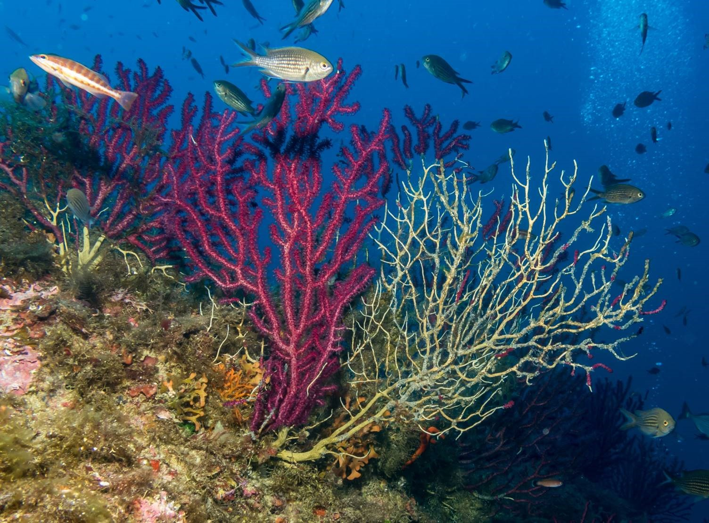

Marine and littoral
Marine
Saltwater ecosystems including seabeds, communities and transition zones of the marine environment.
Regions: Busturialdea-Urdaibai · Uribe · Lea-Artibai · Gran Bilbao
View species in this habitat